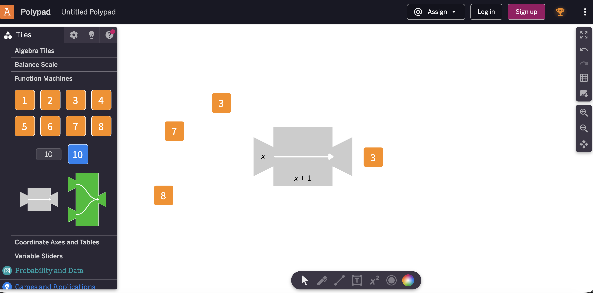

Explore in Polypad
Use function machines to test inputs and see how values change as they pass through a rule.

This activity uses Polypad by Amplify to explore substitution through visual function machines.
Rather than recreating this powerful tool, students are directed to the original platform and then supported with structured practice and teacher resources.

Use function machines to test inputs and see how values change as they pass through a rule.
Connect the visual machine to algebraic language such as input, output, variable and expression.
Complete the student quiz or generate a worksheet to practise substituting values into expressions.
Students should describe what the expression does, not just calculate the final answer.
Polypad by Amplify provides a flexible visual workspace for exploring function machines. This page acts as a structured launch point for the activity and the related teacher resources.